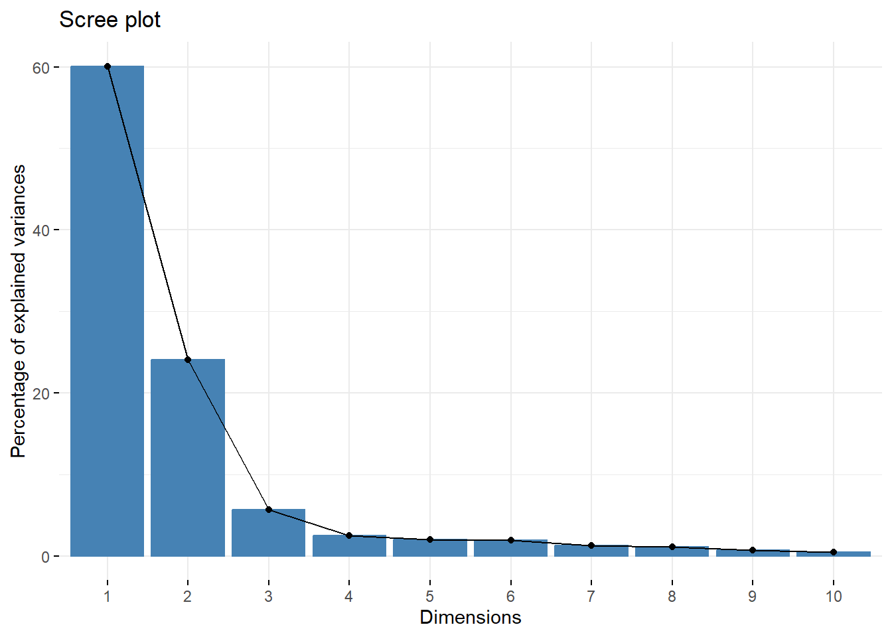

Chapter 5 Statistical Analysis
5.1 Regression
5.1.1 Linear regression on groups
5.2 Linear Regression
kable(mtcars %>% group_by(as.factor(gear)) %>%
summarise(mean = mean(qsec), sd = sd(qsec))) %>%
kable_styling(full_width = F) %>%
kable_minimal()| as.factor(gear) | mean | sd |
|---|---|---|
| 3 | 17.692 | 1.349916 |
| 4 | 18.965 | 1.613880 |
| 5 | 15.640 | 1.130487 |
#Run the same linear regression model by group levels?
#Instead of running #summary(lm(y~x)) for the number of levels
#you have, you can use the R package “broom” along with dplyr.
# Run the same regression model for gears ##
kable(mtcars%>% group_by(gear) %>%
do(fitgear = glance(lm(hp~qsec, data = .))) %>%
unnest(fitgear),digits=2) %>% kable_styling(full_width = F) %>%
kable_minimal()| gear | r.squared | adj.r.squared | sigma | statistic | p.value | df | logLik | AIC | BIC | deviance | df.residual | nobs |
|---|---|---|---|---|---|---|---|---|---|---|---|---|
| 3 | 0.66 | 0.63 | 28.87 | 25.19 | 0.00 | 1 | -70.65 | 147.31 | 149.43 | 10837.12 | 13 | 15 |
| 4 | 0.10 | 0.01 | 25.72 | 1.15 | 0.31 | 1 | -54.90 | 115.80 | 117.26 | 6616.46 | 10 | 12 |
| 5 | 0.88 | 0.83 | 41.95 | 21.03 | 0.02 | 1 | -24.50 | 55.00 | 53.83 | 5279.95 | 3 | 5 |
fit <- lm(qsec ~ wt + hp+disp+factor(cyl), data = mtcars)
summary(fit)##
## Call:
## lm(formula = qsec ~ wt + hp + disp + factor(cyl), data = mtcars)
##
## Residuals:
## Min 1Q Median 3Q Max
## -1.9745 -0.5007 -0.1771 0.4984 2.7516
##
## Coefficients:
## Estimate Std. Error t value Pr(>|t|)
## (Intercept) 17.487436 0.856699 20.413 < 2e-16 ***
## wt 1.620772 0.424366 3.819 0.000748 ***
## hp -0.019618 0.004912 -3.994 0.000475 ***
## disp -0.004124 0.005194 -0.794 0.434313
## factor(cyl)6 -1.407378 0.588219 -2.393 0.024245 *
## factor(cyl)8 -1.636367 1.131421 -1.446 0.160043
## ---
## Signif. codes: 0 '***' 0.001 '**' 0.01 '*' 0.05 '.' 0.1 ' ' 1
##
## Residual standard error: 0.9978 on 26 degrees of freedom
## Multiple R-squared: 0.7385, Adjusted R-squared: 0.6882
## F-statistic: 14.68 on 5 and 26 DF, p-value: 7.13e-07effectsize(fit)## # Standardization method: refit
##
## Parameter | Coefficient (std.) | 95% CI
## --------------------------------------------------
## (Intercept) | 0.57 | [-0.13, 1.28]
## wt | 0.89 | [ 0.41, 1.37]
## hp | -0.75 | [-1.14, -0.37]
## disp | -0.29 | [-1.03, 0.45]
## factor(cyl)6 | -0.79 | [-1.46, -0.11]
## factor(cyl)8 | -0.92 | [-2.22, 0.39]anova_table <- anova(fit)
effectsize(anova_table)## # Effect Size for ANOVA (Type I)
##
## Parameter | Eta2 (partial) | 90% CI
## -------------------------------------------
## wt | 0.10 | [0.00, 0.31]
## hp | 0.70 | [0.53, 0.80]
## disp | 0.10 | [0.00, 0.30]
## factor(cyl) | 0.18 | [0.00, 0.33]5.3 Logistic Regression
5.3.1 Create the LogR model
5.4 Principle Component Analysis
complete dataset needed for following
5.4.1 make the PCA model
data("mtcars")
mtcars <- mtcars %>% rownames_to_column("car_name") # if needed for df
mtcars <- rowid_to_column(mtcars, "row_num")
#make the PCA model
pcamodel.pca <- prcomp(mtcars[,c(3:13)], center = TRUE,scale. = TRUE) # I prefer naming columns, but hard with PCA
#summarise PCA
summary(pcamodel.pca)## Importance of components:
## PC1 PC2 PC3 PC4 PC5 PC6 PC7
## Standard deviation 2.5707 1.6280 0.79196 0.51923 0.47271 0.46000 0.3678
## Proportion of Variance 0.6008 0.2409 0.05702 0.02451 0.02031 0.01924 0.0123
## Cumulative Proportion 0.6008 0.8417 0.89873 0.92324 0.94356 0.96279 0.9751
## PC8 PC9 PC10 PC11
## Standard deviation 0.35057 0.2776 0.22811 0.1485
## Proportion of Variance 0.01117 0.0070 0.00473 0.0020
## Cumulative Proportion 0.98626 0.9933 0.99800 1.0000head(mtcars[,c(3:13)]) #check columns are corrrect## mpg cyl disp hp drat wt qsec vs am gear carb
## 1 21.0 6 160 110 3.90 2.620 16.46 0 1 4 4
## 2 21.0 6 160 110 3.90 2.875 17.02 0 1 4 4
## 3 22.8 4 108 93 3.85 2.320 18.61 1 1 4 1
## 4 21.4 6 258 110 3.08 3.215 19.44 1 0 3 1
## 5 18.7 8 360 175 3.15 3.440 17.02 0 0 3 2
## 6 18.1 6 225 105 2.76 3.460 20.22 1 0 3 15.4.2 make a scree plot of the PCA model
#creates scree plot
fviz_eig(pcamodel.pca) scree plot shows how much variance can be summarised with one variable (components)
5.5 Survival Analysis and Visualisation
5.5.1 To be completed
5.6 Receiver Operated Curves (ROC)
5.6.1 To be completed
5.7 Missing Values
library(naniar)
library(UpSetR)##
## Attaching package: 'UpSetR'## The following object is masked from 'package:lattice':
##
## histogram